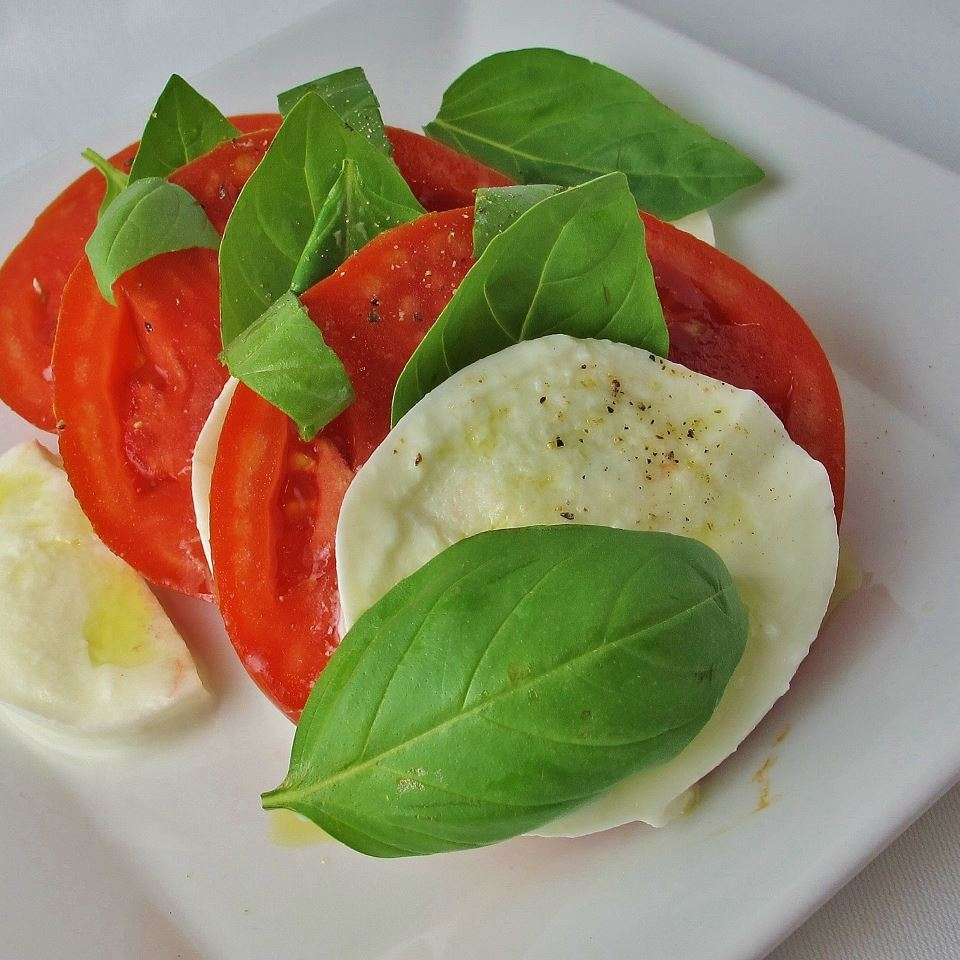

Insalata Caprese II
Because this salad is so simple, fresh, top-quality tomatoes and mozzarella are important.
Source: allrecipes.com

Prep: 15 mins
Cook: 20 mins
Total: 35 mins
Servings: 4
Yield: 4 servings
Ingredients
- 4 large ripe tomatoes, sliced 1/4 inch thick
- 1 pound fresh mozzarella cheese, sliced 1/4 inch thick
- 1/3 cup fresh basil leaves
- 3 tablespoons extra virgin olive oil
- fine sea salt to taste
- freshly ground black pepper to taste
Directions
- On a large platter, alternate and overlap the tomato slices, mozzarella cheese slices, and basil leaves. Drizzle with olive oil. Season with sea salt and pepper.
Nutrition Facts
Per Serving: 311 calories; protein 17.9g; carbohydrates 6.6g; fat 23.9g; cholesterol 59.8mg; sodium 627.3mg.
Back to main page to see more recipes